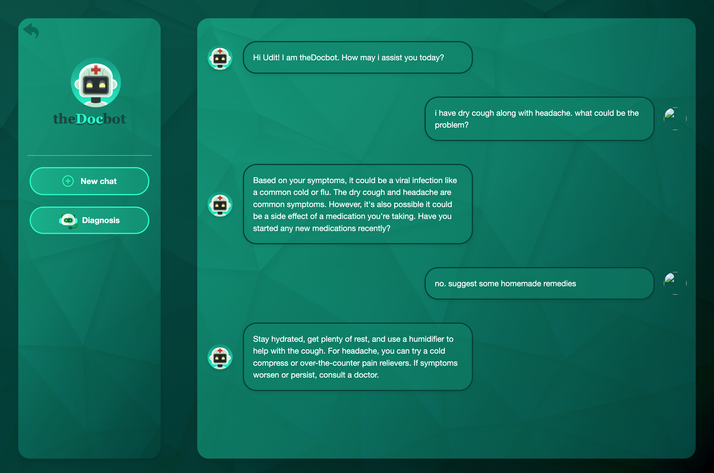

Projects 🚀

The DocBot: AI Powered Medical Assistant
- Deployed a Mistral-Nemo-Instruct-2407 based chatbot using the HuggingFace Inference API for providing medical assistance based on user queries.
- Integrated 5 volumes of medical encyclopedias, encompassing over 2500 pages, into a FAISS vector database, leveraging Retrieval-Augmented Generation (RAG) for precise and contextually relevant responses.
- Implemented a ReactJS frontend with Google authentication, storing user profiles in a database to enhance chatbot response quality.

Automated ETL pipeline for Weather data of 6 Indian cities
- Developed and implemented an automated ETL pipeline using Apache Airflow to extract, transform, and load weather data for six major Indian cities from the OpenWeatherMap API.
- Transformed raw weather data response into structured Pandas DataFrames, ensuring data consistency and accuracy before loading it into an AWS S3 bucket for scalable storage and easy accessibility.
- Integrated AWS Glue Crawler to automatically create a schema and database, and utilized AWS Athena for querying and analyzing the weather data, enabling insightful data exploration and analysis.
CareerHub: Job Application Optimization Platform
- Developed an AI-driven career guidance platform using OpenAI's GPT-4.1-nano and GPT-o4-mini to automate resume tailoring, job matching, and interview preparation.
- Implemented LaTeX-based dynamic resume generation and ATS-optimized keyword matching by analyzing job descriptions and user profiles.
- Deployed the platform in Docker containers for portability and scalability; integrated chatbot support for gap analysis, upskilling recommendations, and interview assistance.
Thirukkural.AI
- Leveraged Mistral 7B Instruct model using the HuggingFace inference API, specifically prompt-engineered for this application, to explore the profound teachings of Thirukkural.
- Implemented Retrieval Augmented Generation to retrieve relevant lines from the book according to the user query.
- Utilized a Vector database to store the embedding of each couplet and to develop a Recommender system.